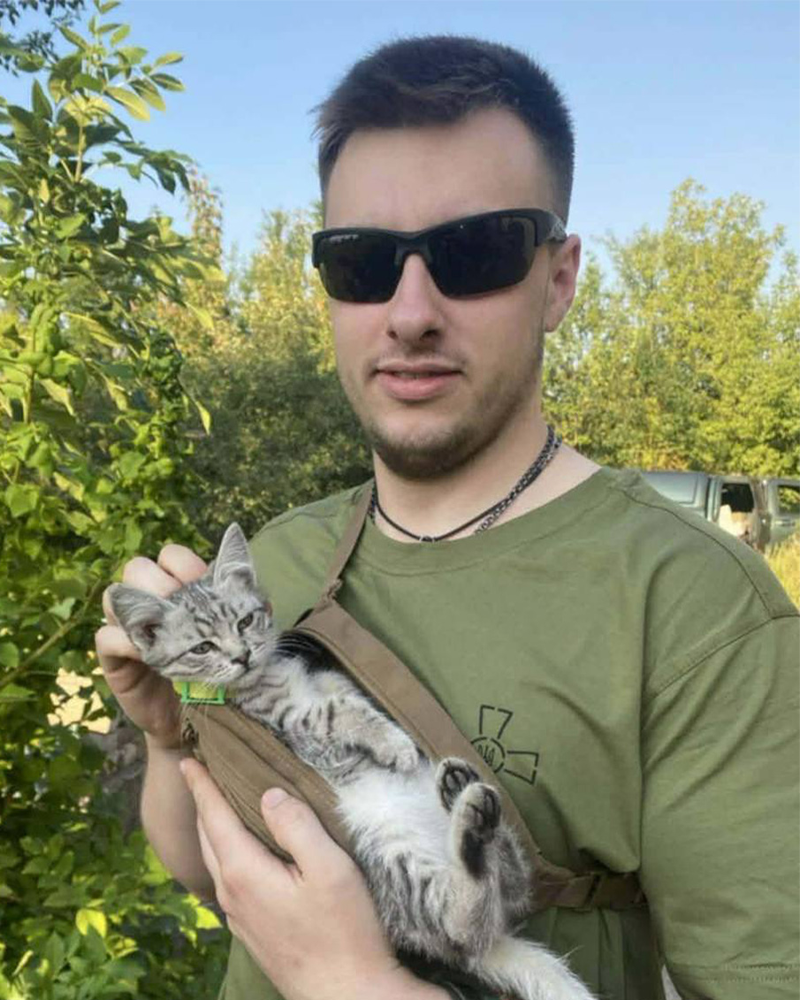
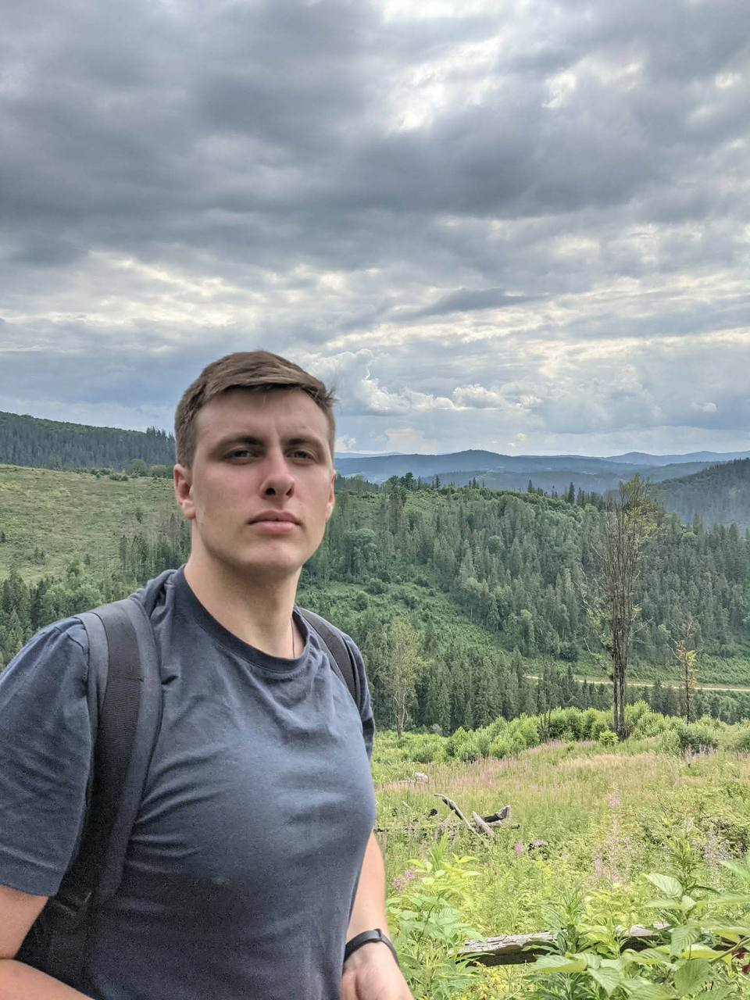

Народився 15 лютого 1999 року у Львові. Навчався у Львівській українській гімназії ім. Олени Степанів. А у 2014 році вступив до Львівського поліграфічного фахового коледжу на спеціальність «Видавнича справа та редагування». Каже, що таку спеціальність обрав через хист до гуманітарних наук.
Навчання в коледжі згадує як дуже яскравий етап свого життя, з особливою подякою ставиться до Левицької Оксани Степанівни, Шимечко Надії Павлівни, Бабченко Світлани Генріхівни та Хомчак Лесі Миронівни. Навчальний заклад закінчив з відзнакою, як і його кохана, а тепер вже дружина – Юлія Яремчук. Після, навчався в Українській академії друкарства на спеціальності «Журналістика» («Реклама та зв`язки з громадськістю»). Паралельно з навчанням Ярослав працював в Львівській національній чоловічій хоровій капелі «Дударик».
У жовтні розпочав строкову службу, яку проходив до лютого 2022 року. Із початком повномасштабного вторгнення брав участь у підготовці та побудові оборонних ліній на Київщині. Після стабілізації ситуації був переведений до виконання завдань у тилу.
З огляду на продовження служби строковиків після початку війни ухвалив рішення перейти на контракт разом із побратимом у складі 101 Окремої Бригади Охорони Генерального Штабу Збройних Сил України, де служив у роті розвідки.
Влітку 2024 року отримав першу бойову ротацію на східний напрямок. Виконував бойові завдання біля Торецька Донецької області.
22 вересня 2024 року внаслідок ворожого обстрілу з 120-мм міномета зазнав важкого вогнепального поранення обох ніг. Завдяки оперативним діям побратимів був евакуйований до стабілізаційного пункту в зоні бойових дій.
Проходив лікування у Дніпрі та Черкасах. Лікарям вдалося врятувати ліву стопу. Реабілітацію та протезування проходив у Львові в реабілітаційному центрі «Незламні».
Службу в армії вважає найкращим періодом свого життя. Найбільшу цінність для нього становили люди, яких зустрів, виклики, відповідальність і бойовий досвід, що залишиться з ним назавжди. Найбільше шкодує про те, що нині не поруч із побратимами, які продовжують стримувати ворога.
Попри звання солдата, фактично виконував більше обов’язків: за рішенням командира роти був призначений старшим над військовослужбовцями, старшими за віком і званням, завдяки довірі та визнанню його внеску в результат підрозділу.
Його підрозділ першим у складі 101 Окремої Бригади Охорони Генерального Штабу Збройних Сил України розпочав освоєння наземних роботизованих комплексів, які нині виконують значну частину логістичних завдань. Він організовував роботу підрозділу та екіпажів. Водночас через високу інтенсивність бойових дій на напрямку повноцінно застосувати ці технології тоді не вдалося.
На його думку, окрім фінансової підтримки тилу, фронт передусім потребує людей. Він наголошує на важливості особистої підготовки: фізичної витривалості, психологічної готовності та свідомого вибору служби. Молоді радить не чекати примусових рішень, а звертатися до рекрутингових центрів, комунікувати зі знайомими військовими та обирати підрозділи усвідомлено.
Звертає увагу, що сьогодні існує значна потреба як у бойових спеціальностях, зокрема операторах БПЛА, так і в тилових посадах. Переконаний, що ініціатива та готовність діяти сьогодні — це спосіб запобігти ще більшим втратам у майбутньому. Поки є можливість протидіяти агресії, її потрібно використовувати.
У цивільному житті найбільшою цінністю для себе вважає час, який намагається використовувати максимально продуктивно. Уже певний період займається олімпійською стрільбою з класичного лука та розраховує на досягнення професійних результатів. Його тренерка — Тетяна Ящишин, яка під час першого ракетного обстрілу Яворівського полігону втратила батька та зазнала контузії.
За умови дозволу лікарів планує долучитися до ініціатив зі складання безпілотників, адже переконаний, що саме дрони сьогодні відіграють важливу роль на полі бою.
Також наголошує на важливості базової підготовки цивільного населення: проходження курсів із тактичної медицини та ознайомлення з технологіями безпілотних систем. На його думку, ці знання залишатимуться актуальними для країни ще багато років.
Звертаючись до українського суспільства, він наголошує, що саме зараз вирішується майбутнє держави. На його переконання, країна має історичний шанс змінити вектор свого розвитку та остаточно утвердитися як повноправна частина західного світу.
Водночас він усвідомлює, що цей шлях вимагатиме тривалої боротьби. Саме тому закликає кожного долучатися до спротиву на своєму місці — у війську, волонтерстві, професійній діяльності чи громадській роботі. На його думку, спільна відповідальність і активна позиція кожного є визначальними для майбутнього країни.
Підготувала Аліна Стасюкевич,
студентка спеціальності «Журналістика»
